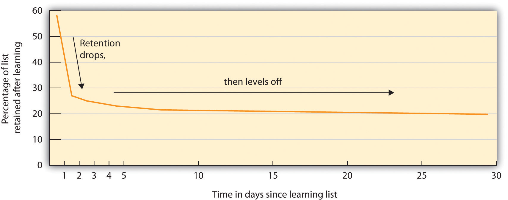
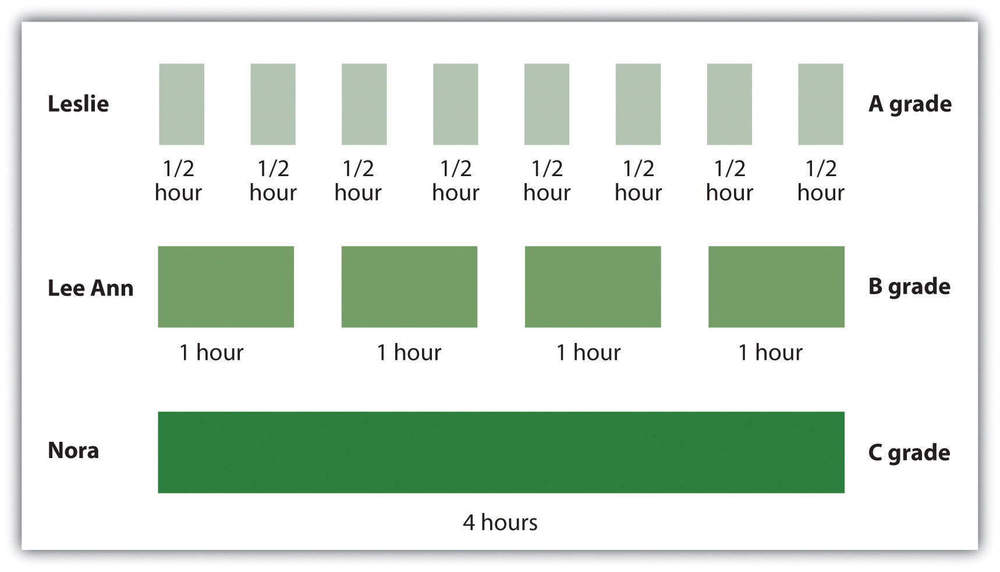
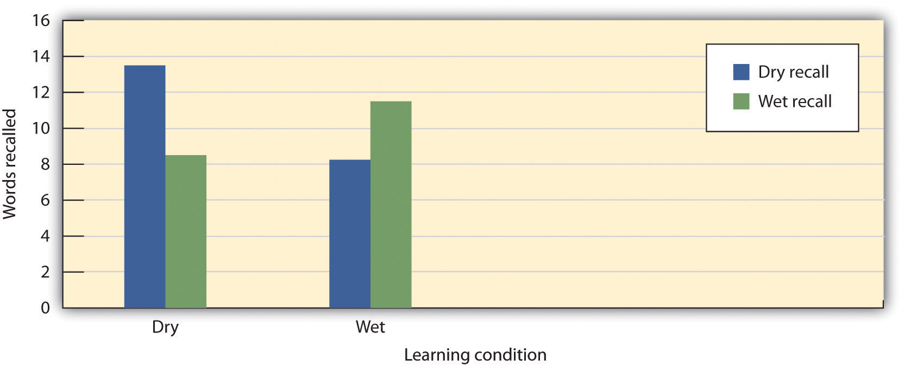

Although it is useful to hold information in sensory and short-term memory, we also rely on our long-term memory (LTM). We want to remember the name of the new boy in the class, the name of the movie we saw last week, and the material for our upcoming psychology test. Psychological research has produced a great deal of knowledge about long-term memory, and this research can be useful as you try to learn and remember new material (see Table 8.2 "Helpful Memory Techniques Based on Psychological Research"). In this section we will consider this question in terms of the types of processing that we do on the information we want to remember. To be successful, the information that we want to remember must be encoded and stored, and then retrieved.
Table 8.2 Helpful Memory Techniques Based on Psychological Research
| Technique | Description | Useful example |
|---|---|---|
| Use elaborative encoding. | Material is better remembered if it is processed more fully. | Think, for instance, “Proactive interference is like retroactive interference but it occurs in a forward manner.” |
| Make use of the self-reference effect. | Material is better remembered if it is linked to thoughts about the self. | Think, for instance, “I remember a time when I knew the answer to an exam question but couldn’t quite get it to come to mind. This was an example of the tip-of-the-tongue phenomenon.” |
| Be aware of the forgetting curve. | Information that we have learned drops off rapidly with time. | Review the material that you have already studied right before the exam to increase the likelihood it will remain in memory. |
| Make use of the spacing effect. | Information is learned better when it is studied in shorter periods spaced over time. | Study a little bit every day; do not cram at the last minute. |
| Rely on overlearning. | We can continue to learn even after we think we know the information perfectly. | Keep studying, even if you think you already have it down. |
| Use context-dependent retrieval. | We have better retrieval when it occurs in the same situation in which we learned the material. | If possible, study under conditions similar to the conditions in which you will take the exam. |
| Use state-dependent retrieval. | We have better retrieval when we are in the same psychological state as we were when we learned the material. | Many possibilities, but don’t study under the influence of drugs or alcohol, unless you plan to use them on the day of the exam (which is not recommended). |
EncodingThe process by which we place the things that we experience into memory. is the process by which we place the things that we experience into memory. Unless information is encoded, it cannot be remembered. I’m sure you’ve been to a party where you’ve been introduced to someone and then—maybe only seconds later—you realize that you do not remember the person’s name. Of course it’s not really surprising that you can’t remember the name, because you probably were distracted and you never encoded the name to begin with.
Not everything we experience can or should be encoded. We tend to encode things that we need to remember and not bother to encode things that are irrelevant. Look at Figure 8.8 "Pennies in Different Styles", which shows different images of U.S. pennies. Can you tell which one is the real one? Nickerson and Adams (1979)Nickerson, R. S., & Adams, M. J. (1979). Long-term memory for a common object. Cognitive Psychology, 11(3), 287–307. found that very few of the U.S. participants they tested could identify the right one. We see pennies a lot, but we don’t bother to encode their features.
Figure 8.8 Pennies in Different Styles

Can you identify the “real” penny? We tend to have poor memory for things that don’t matter, even if we see them frequently.
One way to improve our memory is to use better encoding strategies. Some ways of studying are more effective than others. Research has found that we are better able to remember information if we encode it in a meaningful way. When we engage in elaborative encodingLearning by processing new information in ways that make it more relevant. we process new information in ways that make it more relevant or meaningful (Craik & Lockhart, 1972; Harris & Qualls, 2000).Craik, F. I., & Lockhart, R. S. (1972). Levels of processing: A framework for memory research. Journal of Verbal Learning & Verbal Behavior, 11(6), 671–684; Harris, J. L., & Qualls, C. D. (2000). The association of elaborative or maintenance rehearsal with age, reading comprehension and verbal working memory performance. Aphasiology, 14(5–6), 515–526.
Imagine that you are trying to remember the characteristics of the different schools of psychology we discussed in Chapter 1 "Introducing Psychology". Rather than simply trying to remember the schools and their characteristics, you might try to relate the information to things you already know. For instance, you might try to remember the fundamentals of the cognitive school of psychology by linking the characteristics to the computer model. The cognitive school focuses on how information is input, processed, and retrieved, and you might think about how computers do pretty much the same thing. You might also try to organize the information into meaningful units. For instance, you might link the cognitive school to structuralism because both were concerned with mental processes. You also might try to use visual cues to help you remember the information. You might look at the image of Freud and imagine what he looked like as a child. That image might help you remember that childhood experiences were an important part of Freudian theory. Each person has his or her unique way of elaborating on information; the important thing is to try to develop unique and meaningful associations among the materials.
In an important study showing the effectiveness of elaborative encoding, Rogers, Kuiper, and Kirker (1977)Rogers, T. B., Kuiper, N. A., & Kirker, W. S. (1977). Self-reference and the encoding of personal information. Journal of Personality & Social Psychology, 35(9), 677–688. studied how people recalled information that they had learned under different processing conditions. All the participants were presented with the same list of 40 adjectives to learn, but through the use of random assignment, the participants were given one of four different sets of instructions about how to process the adjectives.
Participants assigned to the structural task condition were asked to judge whether the word was printed in uppercase or lowercase letters. Participants in the phonemic task condition were asked whether or not the word rhymed with another given word. In the semantic task condition, the participants were asked if the word was a synonym of another word. And in the self-reference task condition, participants were asked to indicate whether or not the given adjective was or was not true of themselves. After completing the specified task, each participant was asked to recall as many adjectives as he or she could remember.
Rogers and his colleagues hypothesized that different types of processing would have different effects on memory. As you can see in Figure 8.9 "Self-Reference Effect Results", the students in the self-reference task condition recalled significantly more adjectives than did students in any other condition. This finding, known as the self-reference effect, is powerful evidence that the self-concept helps us organize and remember information. The next time you are studying for an exam, you might try relating the material to your own experiences. The self-reference effect suggests that doing so will help you better remember the information (Symons & Johnson, 1997).Symons, C. S., & Johnson, B. T. (1997). The self-reference effect in memory: A meta-analysis. Psychological Bulletin, 121(3), 371–394.
Figure 8.9 Self-Reference Effect Results

Participants recalled the same words significantly better when they were processed in relation to the self than when they were processed in other ways.
Source: Adapted from Rogers, T. B., Kuiper, N. A., & Kirker, W. S. (1977). Self-reference and the encoding of personal information. Journal of Personality & Social Psychology, 35(9), 677–688.
Hermann Ebbinghaus (1850–1909) was a pioneer of the study of memory. In this section we consider three of his most important findings, each of which can help you improve your memory. In his research, in which he was the only research participant, Ebbinghaus practiced memorizing lists of nonsense syllables, such as the following:
DIF, LAJ, LEQ, MUV, WYC, DAL, SEN, KEP, NUD
You can imagine that because the material that he was trying to learn was not at all meaningful, it was not easy to do. Ebbinghaus plotted how many of the syllables he could remember against the time that had elapsed since he had studied them. He discovered an important principle of memory: Memory decays rapidly at first, but the amount of decay levels off with time (Figure 8.10 "Ebbinghaus Forgetting Curve"). Although Ebbinghaus looked at forgetting after days had elapsed, the same effect occurs on longer and shorter time scales. Bahrick (1984)Bahrick, H. P. (1984). Semantic memory content in permastore: Fifty years of memory for Spanish learned in school. Journal of Experimental Psychology: General, 113(1), 1–29. found that students who took a Spanish language course forgot about one half of the vocabulary that they had learned within three years, but that after that time their memory remained pretty much constant. Forgetting also drops off quickly on a shorter time frame. This suggests that you should try to review the material that you have already studied right before you take an exam; that way, you will be more likely to remember the material during the exam.
Figure 8.10 Ebbinghaus Forgetting Curve
Hermann Ebbinghaus found that memory for information drops off rapidly at first but then levels off after time.
Ebbinghaus also discovered another important principle of learning, known as the spacing effect. The spacing effectThe fact that learning is better when the same amount of study is spread out over periods of time than it is when it occurs closer together or at the same time. refers to the fact that learning is better when the same amount of study is spread out over periods of time than it is when it occurs closer together or at the same time. This means that even if you have only a limited amount of time to study, you’ll learn more if you study continually throughout the semester (a little bit every day is best) than if you wait to cram at the last minute before your exam (Figure 8.11 "Effects of Massed Versus Distributed Practice on Learning"). Another good strategy is to study and then wait as long as you can before you forget the material. Then review the information and again wait as long as you can before you forget it. (This probably will be a longer period of time than the first time.) Repeat and repeat again. The spacing effect is usually considered in terms of the difference between distributed practice (practice that is spread out over time) and massed practice (practice that comes in one block), with the former approach producing better memory.
Figure 8.11 Effects of Massed Versus Distributed Practice on Learning
The spacing effect refers to the fact that memory is better when it is distributed rather than massed. Leslie, Lee Ann, and Nora all studied for four hours total, but the students who spread out their learning into smaller study sessions did better on the exam.
Ebbinghaus also considered the role of overlearning—that is, continuing to practice and study even when we think that we have mastered the material. Ebbinghaus and other researchers have found that overlearning helps encoding (Driskell, Willis, & Copper, 1992).Driskell, J. E., Willis, R. P., & Copper, C. (1992). Effect of overlearning on retention. Journal of Applied Psychology, 77(5), 615–622. Students frequently think that they have already mastered the material but then discover when they get to the exam that they have not. The point is clear: Try to keep studying and reviewing, even if you think you already know all the material.
Even when information has been adequately encoded and stored, it does not do us any good if we cannot retrieve it. RetrievalThe process of reactivating information that has been stored in memory. refers to the process of reactivating information that has been stored in memory. You can get an idea of the difficulty posed by retrieval by simply reading each of the words (but not the categories) in the sidebar below to someone. Tell the person that after you have read all the words, you will ask her to recall the words.
After you read the list to your friend, give her enough time to write down all the words that she can recall. Make sure that she cannot recall any more and then, for the words that were not listed, prompt your friend with some of the category names: “Do you remember any words that were furniture? Do you remember any words that were tools?” I think you will find that the category names, which serve as retrieval cues, will help your friend remember information that she could not retrieve otherwise.
Try this test of the ability to retrieve information with a classmate. The instructions are in the text.
| Apple | (Fruit) |
| Dresser | (Furniture) |
| Sander | (Tool) |
| Pomegranate | (Fruit) |
| Sunflower | (Flower) |
| Tangerine | (Fruit) |
| Chair | (Furniture) |
| Peony | (Flower) |
| Banana | (Fruit) |
| Sofa | (Furniture) |
| Bench | (Furniture) |
| Strawberry | (Fruit) |
| Television stand | (Furniture) |
| Magnolia | (Flower) |
| Rose | (Flower) |
| Wrench | (Tool) |
| Screwdriver | (Tool) |
| Dahlia | (Flower) |
| Drill press | (Tool) |
| Hammer | (Tool) |
We’ve all experienced retrieval failure in the form of the frustrating tip-of-the-tongue phenomenonThe experience of being certain that we know something that we are trying to recall, but yet we cannot quite come up with it., in which we are certain that we know something that we are trying to recall but cannot quite come up with it. You can try this one on your friends as well. Read your friend the names of the 10 states listed in the sidebar below, and ask him to name the capital city of each state. Now, for the capital cities that your friend can’t name, give him just the first letter of the capital city. You’ll probably find that having the first letters of the cities helps with retrieval. The tip-of-the-tongue experience is a very good example of the inability to retrieve information that is actually stored in memory.
Try this demonstration of the tip-of-the-tongue phenomenon with a classmate. Instructions are in the text.
| Georgia | (Atlanta) |
| Maryland | (Annapolis) |
| California | (Sacramento) |
| Louisiana | (Baton Rouge) |
| Florida | (Tallahassee) |
| Colorado | (Denver) |
| New Jersey | (Trenton) |
| Arizona | (Phoenix) |
| Nebraska | (Lincoln) |
| Kentucky | (Frankfort) |
We are more likely to be able to retrieve items from memory when conditions at retrieval are similar to the conditions under which we encoded them. Context-dependent learningAn increase in retrieval when the external situation in which information is learned matches the situation in which it is remembered. refers to an increase in retrieval when the external situation in which information is learned matches the situation in which it is remembered. Godden and Baddeley (1975)Godden, D. R., & Baddeley, A. D. (1975). Context-dependent memory in two natural environments: On land and underwater. British Journal of Psychology, 66(3), 325–331. conducted a study to test this idea using scuba divers. They asked the divers to learn a list of words either when they were on land or when they were underwater. Then they tested the divers on their memory, either in the same or the opposite situation. As you can see in Figure 8.12 "Results From Godden and Baddeley, 1975", the divers’ memory was better when they were tested in the same context in which they had learned the words than when they were tested in the other context.
Figure 8.12 Results From Godden and Baddeley, 1975
Godden and Baddeley (1975) tested the memory of scuba divers to learn and retrieve information in different contexts and found strong evidence for context-dependent learning.
Source: Adapted from Godden, D. R., & Baddeley, A. D. (1975). Context-dependent memory in two natural environments: On land and underwater. British Journal of Psychology, 66(3), 325–331.
You can see that context-dependent learning might also be important in improving your memory. For instance, you might want to try to study for an exam in a situation that is similar to the one in which you are going to take the exam.
Whereas context-dependent learning refers to a match in the external situation between learning and remembering, state-dependent learningAn increase in retrieval that occurs when the individual is tested in the same physiological or psychological state as during encoding. refers to superior retrieval of memories when the individual is in the same physiological or psychological state as during encoding. Research has found, for instance, that animals that learn a maze while under the influence of one drug tend to remember their learning better when they are tested under the influence of the same drug than when they are tested without the drug (Jackson, Koek, & Colpaert, 1992).Jackson, A., Koek, W., & Colpaert, F. (1992). NMDA antagonists make learning and recall state-dependent. Behavioural Pharmacology, 3(4), 415. And research with humans finds that bilinguals remember better when tested in the same language in which they learned the material (Marian & Kaushanskaya, 2007).Marian, V. & Kaushanskaya, M. (2007). Language context guides memory content. Psychonomic Bulletin and Review, 14(5), 925–933. Mood states may also produce state-dependent learning. People who learn information when they are in a bad (rather than a good) mood find it easier to recall these memories when they are tested while they are in a bad mood, and vice versa. It is easier to recall unpleasant memories than pleasant ones when we’re sad, and easier to recall pleasant memories than unpleasant ones when we’re happy (Bower, 1981; Eich, 2008).Bower, G. H. (1981). Mood and memory. American Psychologist, 36, 129–148; Eich, E. (2008). Mood and memory at 26: Revisiting the idea of mood mediation in drug-dependent and place-dependent memory. In M. A. Gluck, J. R. Anderson, & S. M. Kosslyn (Eds.), Memory and mind: A festschrift for Gordon H. Bower (pp. 247–260). Mahwah, NJ: Lawrence Erlbaum Associates.
Variations in the ability to retrieve information are also seen in the serial position curve. When we give people a list of words one at a time (e.g., on flashcards) and then ask them to recall them, the results look something like those in Figure 8.13 "The Serial Position Curve". People are able to retrieve more words that were presented to them at the beginning and the end of the list than they are words that were presented in the middle of the list. This pattern, known as the serial position curve, is caused by two retrieval phenomenon: The primacy effectThe tendency to better remember stimuli that are presented early in a list. refers to a tendency to better remember stimuli that are presented early in a list. The recency effectThe tendency to better remember stimuli that are presented later in a list. refers to the tendency to better remember stimuli that are presented later in a list.
Figure 8.13 The Serial Position Curve

The serial position curve is the result of both primacy effects and recency effects.
There are a number of explanations for primacy and recency effects, but one of them is in terms of the effects of rehearsal on short-term and long-term memory (Baddeley, Eysenck, & Anderson, 2009).Baddeley, A., Eysenck, M. W., & Anderson, M. C. (2009). Memory. New York, NY: Psychology Press. Because we can keep the last words that we learned in the presented list in short-term memory by rehearsing them before the memory test begins, they are relatively easily remembered. So the recency effect can be explained in terms of maintenance rehearsal in short-term memory. And the primacy effect may also be due to rehearsal—when we hear the first word in the list we start to rehearse it, making it more likely that it will be moved from short-term to long-term memory. And the same is true for the other words that come early in the list. But for the words in the middle of the list, this rehearsal becomes much harder, making them less likely to be moved to LTM.
In some cases our existing memories influence our new learning. This may occur either in a backward way or a forward way. Retroactive interferenceMemory impairment that occurs when learning something new impairs memory for information that was learned earlier. occurs when learning something new impairs our ability to retrieve information that was learned earlier. For example, if you have learned to program in one computer language, and then you learn to program in another similar one, you may start to make mistakes programming the first language that you never would have made before you learned the new one. In this case the new memories work backward (retroactively) to influence retrieval from memory that is already in place.
In contrast to retroactive interference, proactive interference works in a forward direction. Proactive interferenceMemory impairment that occurs when earlier learning impairs our ability to encode information that we try to learn later. occurs when earlier learning impairs our ability to encode information that we try to learn later. For example, if we have learned French as a second language, this knowledge may make it more difficult, at least in some respects, to learn a third language (say Spanish), which involves similar but not identical vocabulary.
Figure 8.14 Proactive and Retroactive Interference

Retroactive and proactive interference can both influence memory.
Memories that are stored in LTM are not isolated but rather are linked together into categoriesA network of associated memories that have features in common with each other.—networks of associated memories that have features in common with each other. Forming categories, and using categories to guide behavior, is a fundamental part of human nature. Associated concepts within a category are connected through spreading activation, which occurs when activating one element of a category activates other associated elements. For instance, because tools are associated in a category, reminding people of the word “screwdriver” will help them remember the word “wrench.” And, when people have learned lists of words that come from different categories (e.g., as in Note 8.33 "Retrieval Demonstration"), they do not recall the information haphazardly. If they have just remembered the word “wrench,” they are more likely to remember the word “screwdriver” next than they are to remember the word “dahlia,” because the words are organized in memory by category and because “dahlia” is activated by spreading activation from “wrench” (Srull & Wyer, 1989).Srull, T., & Wyer, R. (1989). Person memory and judgment. Psychological Review, 96(1), 58–83.
Some categories have defining features that must be true of all members of the category. For instance, all members of the category “triangles” have three sides, and all members of the category “birds” lay eggs. But most categories are not so well-defined; the members of the category share some common features, but it is impossible to define which are or are not members of the category. For instance, there is no clear definition of the category “tool.” Some examples of the category, such as a hammer and a wrench, are clearly and easily identified as category members, whereas other members are not so obvious. Is an ironing board a tool? What about a car?
Members of categories (even those with defining features) can be compared to the category prototypeThe member of the category that is most average or typical of the category., which is the member of the category that is most average or typical of the category. Some category members are more prototypical of, or similar to, the category than others. For instance, some category members (robins and sparrows) are highly prototypical of the category “birds,” whereas other category members (penguins and ostriches) are less prototypical. We retrieve information that is prototypical of a category faster than we retrieve information that is less prototypical (Rosch, 1975).Rosch, E. (1975). Cognitive representations of semantic categories. Journal of Experimental Psychology: General, 104(3), 192–233.
Mental categories are sometimes referred to as schemasA pattern of knowledge in long-term memory that helps us organize information.—patterns of knowledge in long-term memory that help us organize information. We have schemas about objects (that a triangle has three sides and may take on different angles), about people (that Sam is friendly, likes to golf, and always wears sandals), about events (the particular steps involved in ordering a meal at a restaurant), and about social groups (we call these group schemas stereotypes).
Schemas are important in part because they help us remember new information by providing an organizational structure for it. Read the following paragraph (Bransford & Johnson, 1972)Bransford, J. D., & Johnson, M. K. (1972). Contextual prerequisites for understanding: Some investigations of comprehension and recall. Journal of Verbal Learning & Verbal Behavior, 11(6), 717–726. and then try to write down everything you can remember.
The procedure is actually quite simple. First you arrange things into different groups. Of course, one pile may be sufficient depending on how much there is to do. If you have to go somewhere else due to lack of facilities, that is the next step; otherwise you are pretty well set. It is important not to overdo things. That is, it is better to do too few things at once than too many. In the short run this may not seem important, but complications can easily arise. A mistake can be expensive as well. At first the whole procedure will seem complicated. Soon, however, it will become just another facet of life. It is difficult to foresee any end to the necessity for this task in the immediate future, but then one never can tell. After the procedure is completed, one arranges the materials into different groups again. Then they can be put into their appropriate places. Eventually they will be used once more and the whole cycle will then have to be repeated. However, that is part of life.
It turns out that people’s memory for this information is quite poor, unless they have been told ahead of time that the information describes “doing the laundry,” in which case their memory for the material is much better. This demonstration of the role of schemas in memory shows how our existing knowledge can help us organize new information, and how this organization can improve encoding, storage, and retrieval.
Just as information is stored on digital media such as DVDs and flash drives, the information in LTM must be stored in the brain. The ability to maintain information in LTM involves a gradual strengthening of the connections among the neurons in the brain. When pathways in these neural networks are frequently and repeatedly fired, the synapses become more efficient in communicating with each other, and these changes create memory. This process, known as long-term potentiation (LTP)The development of memory that occurs through strengthening of the synaptic connections between neurons., refers to the strengthening of the synaptic connections between neurons as result of frequent stimulation (Lynch, 2002).Lynch, G. (2002). Memory enhancement: The search for mechanism-based drugs. Nature Neuroscience, 5(Suppl.), 1035–1038. Drugs that block LTP reduce learning, whereas drugs that enhance LTP increase learning (Lynch et al., 1991).Lynch, G., Larson, J., Staubli, U., Ambros-Ingerson, J., Granger, R., Lister, R. G.,…Weingartner, H. J. (1991). Long-term potentiation and memory operations in cortical networks. In C. A. Wickliffe, M. Corballis, & G. White (Eds.), Perspectives on cognitive neuroscience (pp. 110–131). New York, NY: Oxford University Press. Because the new patterns of activation in the synapses take time to develop, LTP happens gradually. The period of time in which LTP occurs and in which memories are stored is known as the period of consolidation.
Memory is not confined to the cortex; it occurs through sophisticated interactions between new and old brain structures (Figure 8.17 "Schematic Image of Brain With Hippocampus, Amygdala, and Cerebellum Highlighted"). One of the most important brain regions in explicit memory is the hippocampus, which serves as a preprocessor and elaborator of information (Squire, 1992).Squire, L. R. (1992). Memory and the hippocampus: A synthesis from findings with rats, monkeys, and humans. Psychological Review, 99(2), 195–231. The hippocampus helps us encode information about spatial relationships, the context in which events were experienced, and the associations among memories (Eichenbaum, 1999).Eichenbaum, H. (1999). Conscious awareness, memory, and the hippocampus. Nature Neuroscience, 2(9), 775–776. The hippocampus also serves in part as a switching point that holds the memory for a short time and then directs the information to other parts of the brain, such as the cortex, to actually do the rehearsing, elaboration, and long-term storage (Jonides, Lacey, & Nee, 2005).Jonides, J., Lacey, S. C., & Nee, D. E. (2005). Processes of working memory in mind and brain. Current Directions in Psychological Science, 14(1), 2–5. Without the hippocampus, which might be described as the brain’s “librarian,” our explicit memories would be inefficient and disorganized.
Figure 8.17 Schematic Image of Brain With Hippocampus, Amygdala, and Cerebellum Highlighted

Different brain structures help us remember different types of information. The hippocampus is particularly important in explicit memories, the cerebellum is particularly important in implicit memories, and the amygdala is particularly important in emotional memories.
While the hippocampus is handling explicit memory, the cerebellum and the amygdala are concentrating on implicit and emotional memories, respectively. Research shows that the cerebellum is more active when we are learning associations and in priming tasks, and animals and humans with damage to the cerebellum have more difficulty in classical conditioning studies (Krupa, Thompson, & Thompson, 1993; Woodruff-Pak, Goldenberg, Downey-Lamb, Boyko, & Lemieux, 2000).Krupa, D. J., Thompson, J. K., & Thompson, R. F. (1993). Localization of a memory trace in the mammalian brain. Science, 260(5110), 989–991; Woodruff-Pak, D. S., Goldenberg, G., Downey-Lamb, M. M., Boyko, O. B., & Lemieux, S. K. (2000). Cerebellar volume in humans related to magnitude of classical conditioning. Neuroreport: For Rapid Communication of Neuroscience Research, 11(3), 609–615. The storage of many of our most important emotional memories, and particularly those related to fear, is initiated and controlled by the amygdala (Sigurdsson, Doyère, Cain, & LeDoux, 2007).Sigurdsson, T., Doyère, V., Cain, C. K., & LeDoux, J. E. (2007). Long-term potentiation in the amygdala: A cellular mechanism of fear learning and memory. Neuropharmacology, 52(1), 215–227.
Evidence for the role of different brain structures in different types of memories comes in part from case studies of patients who suffer from amnesiaA memory disorder that involves the inability to remember information., a memory disorder that involves the inability to remember information. As with memory interference effects, amnesia can work in either a forward or a backward direction, affecting retrieval or encoding. For people who suffer damage to the brain, for instance, as a result of a stroke or other trauma, the amnesia may work backward. The outcome is retrograde amnesiaA memory disorder that involves the inability to retrieve events that occurred before a given time., a memory disorder that produces an inability to retrieve events that occurred before a given time. Demonstrating the fact that LTP takes time (the process of consolidation), retrograde amnesia is usually more severe for memories that occurred just prior to the trauma than it is for older memories, and events that occurred just before the event that caused memory loss may never be recovered because they were never completely encoded.
Figure 8.18 Scott Bolzan
Scott Bolzan is a motivational speaker, an entrepreneur, and a former NFL football player. In December 2008, he suffered a brain injury that has left him with profound retrograde amnesia. You can read more about him here: http://abcnews.go.com/Nightline/amnesia-man-hits-head-loses-memories/story?id=10396719.
Source: Photo courtesy of Scott Bolzan, http://commons.wikimedia.org/wiki/File:Scott_Bolzan.jpeg.
Organisms with damage to the hippocampus develop a type of amnesia that works in a forward direction to affect encoding, known as anterograde amnesia. Anterograde amnesiaA memory disorder that involves the inability to transfer information from short-term to long-term memory. is the inability to transfer information from short-term into long-term memory, making it impossible to form new memories. One well-known case study was a man named Henry Gustav Molaison (before he died in 2008, he was referred to only as H. M.) who had parts of his hippocampus removed to reduce severe seizures (Corkin, Amaral, González, Johnson, & Hyman, 1997).Corkin, S., Amaral, D. G., González, R. G., Johnson, K. A., & Hyman, B. T. (1997). H. M.’s medial temporal lobe lesion: Findings from magnetic resonance imaging. The Journal of Neuroscience, 17(10), 3964–3979. Following the operation, Molaison developed virtually complete anterograde amnesia. Although he could remember most of what had happened before the operation, and particularly what had occurred early in his life, he could no longer create new memories. Molaison was said to have read the same magazines over and over again without any awareness of having seen them before.
Cases of anterograde amnesia also provide information about the brain structures involved in different types of memory (Bayley & Squire, 2005; Helmuth, 1999; Paller, 2004).Bayley, P. J., & Squire, L. R. (2005). Failure to acquire new semantic knowledge in patients with large medial temporal lobe lesions. Hippocampus, 15(2), 273–280; Helmuth, Laura. (1999). New role found for the hippocampus. Science, 285, 1339–1341; Paller, K. A. (2004). Electrical signals of memory and of the awareness of remembering. Current Directions in Psychological Science, 13(2), 49–55. Although Molaison’s explicit memory was compromised because his hippocampus was damaged, his implicit memory was not (because his cerebellum was intact). He could learn to trace shapes in a mirror, a task that requires procedural memory, but he never had any explicit recollection of having performed this task or of the people who administered the test to him.
Although some brain structures are particularly important in memory, this does not mean that all memories are stored in one place. The American psychologist Karl Lashley (1929)Lashley, K. S. (1929). The effects of cerebral lesions subsequent to the formation of the maze habit: Localization of the habit. In Brain mechanisms and intelligence: A quantitative study of injuries to the brain (pp. 86–108). Chicago, IL: University of Chicago Press. attempted to determine where memories were stored in the brain by teaching rats how to run mazes, and then lesioning different brain structures to see if they were still able to complete the maze. This idea seemed straightforward, and Lashley expected to find that memory was stored in certain parts of the brain. But he discovered that no matter where he removed brain tissue, the rats retained at least some memory of the maze, leading him to conclude that memory isn’t located in a single place in the brain, but rather is distributed around it.
Long-term potentiation occurs as a result of changes in the synapses, which suggests that chemicals, particularly neurotransmitters and hormones, must be involved in memory. There is quite a bit of evidence that this is true. Glutamate, a neurotransmitter and a form of the amino acid glutamic acid, is perhaps the most important neurotransmitter in memory (McEntee & Crook, 1993).McEntee, W., & Crook, T. (1993). Glutamate: Its role in learning, memory, and the aging brain. Psychopharmacology, 111(4), 391–401. When animals, including people, are under stress, more glutamate is secreted, and this glutamate can help them remember (McGaugh, 2003).McGaugh, J. L. (2003). Memory and emotion: The making of lasting memories. New York, NY: Columbia University Press. The neurotransmitter serotonin is also secreted when animals learn, and epinephrine may also increase memory, particularly for stressful events (Maki & Resnick, 2000; Sherwin, 1998).Maki, P. M., & Resnick, S. M. (2000). Longitudinal effects of estrogen replacement therapy on PET cerebral blood flow and cognition. Neurobiology of Aging, 21, 373–383; Sherwin, B. B. (1998). Estrogen and cognitive functioning in women. Proceedings of the Society for Experimental Biological Medicine, 217, 17–22. Estrogen, a female sex hormone, also seems critical, because women who are experiencing menopause, along with a reduction in estrogen, frequently report memory difficulties (Chester, 2001).Chester, B. (2001). Restoring remembering: Hormones and memory. McGill Reporter, 33(10). Retrieved from http://www.mcgill.ca/reporter/33/10/sherwin
Our knowledge of the role of biology in memory suggests that it might be possible to use drugs to improve our memories, and Americans spend several hundred million dollars per year on memory supplements with the hope of doing just that. Yet controlled studies comparing memory enhancers, including Ritalin, methylphenidate, ginkgo biloba, and amphetamines, with placebo drugs find very little evidence for their effectiveness (Gold, Cahill, & Wenk, 2002; McDaniel, Maier, & Einstein, 2002).Gold, P. E., Cahill, L., & Wenk, G. L. (2002). Ginkgo biloba: A cognitive enhancer? Psychological Science in the Public Interest, 3(1), 2–11; McDaniel, M. A., Maier, S. F., & Einstein, G. O. (2002). “Brain-specific” nutrients: A memory cure? Psychological Science in the Public Interest, 3(1), 12–38. Memory supplements are usually no more effective than drinking a sugared soft drink, which also releases glucose and thus improves memory slightly. This is not to say that we cannot someday create drugs that will significantly improve our memory. It is likely that this will occur in the future, but the implications of these advances are as yet unknown (Farah et al., 2004; Turner & Sahakian, 2006).Farah, M. J., Illes, J., Cook-Deegan, R., Gardner, H., Kandel, E., King, P.,…Wolpe, P. R. (2004). Neurocognitive enhancement: What can we do and what should we do? Nature Reviews Neuroscience, 5(5), 421–425; Turner, D. C., & Sahakian, B. J. (2006). Analysis of the cognitive enhancing effects of modafinil in schizophrenia. In J. L. Cummings (Ed.), Progress in neurotherapeutics and neuropsychopharmacology (pp. 133–147). New York, NY: Cambridge University Press.
Although the most obvious potential use of drugs is to attempt to improve memory, drugs might also be used to help us forget. This might be desirable in some cases, such as for those suffering from posttraumatic stress disorder (PTSD) who are unable to forget disturbing memories. Although there are no existing therapies that involve using drugs to help people forget, it is possible that they will be available in the future. These possibilities will raise some important ethical issues: Is it ethical to erase memories, and if it is, is it desirable to do so? Perhaps the experience of emotional pain is a part of being a human being. And perhaps the experience of emotional pain may help us cope with the trauma.